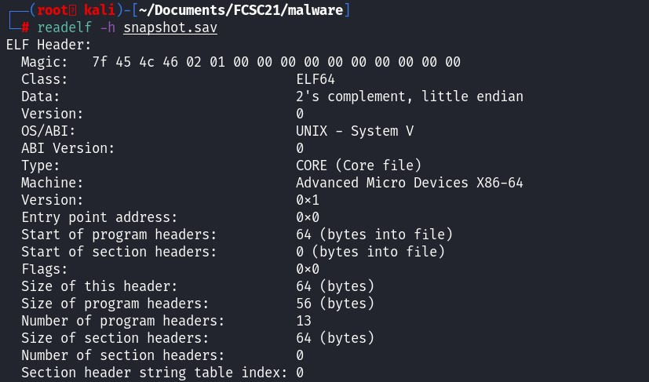
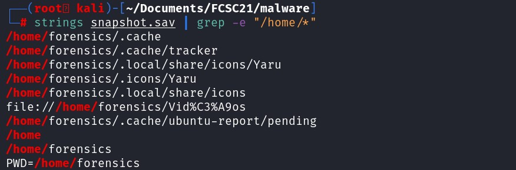
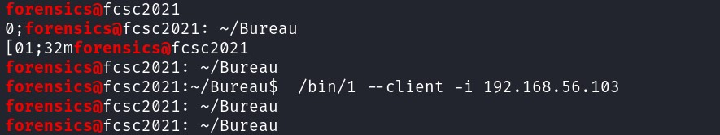

Looking at the file name, it seems to be a memory dump from a snapshot. Let's check the hexdump. Surprisingly, the magic bytes is a ELF and not a snapshot. To get more information about a ELF file, use the command readelf.  It tells us that the file is a coredump file. Normally a core dump is a file that contain the process memory space, to understand at which address, the program stop with an error, such as segmentation fault. Since the subject says it is a memory dump, let's use volatility to see if we can find some information about the system.
volatility3/vol.py -f snapshot.sav banners.Banners
 The linux version is Ubuntu 20.04, using volatility3 didn't give me any result. Let's use volatility 2.7, and create a custom Linux profile to analyze this memory dump.
The linux version is Ubuntu 20.04, using volatility3 didn't give me any result. Let's use volatility 2.7, and create a custom Linux profile to analyze this memory dump. To create a custom Ubuntu 20.04 profile, use another VM, install Ubuntu 20.04 and run the following command:
First, create a file called module.dwarf (kernel's data structures), using the specific tool provided from volatility framework.
cd volatility/tools/linux
make
Then, make a zip containing the file module.dwarf and debug symbols in System.map of the running kernel.
make
zip $(lsb_release -i -s)_$(uname -r)_profile.zip ./volatility/tools/linux/module.dwarf /boot/System.map-$(uname -r)
Finally, copy the zip file in the plugin path of Volatility.
cp Ubuntu_5.8.0-50-generic_profile.zip /home/ubuntu/volatility/volatility/plugins/overlays/linux/
Check the commands available for your custom profile by specifying in the parameter the profile and -h.
/home/ubuntu/volatility/vol.py -f snapshot.sav --profile=LinuxUbuntu_5_8_0-50-generic_profilex64 -h
To print the bash history, use the command linux_bash
After analyzing the bash history, I did not find anything that can help us to find the flag.
To acquire the flag, we must know the username, hostname and the commandline. Let's search in the strings.
To acquire the username, let's think about the user directory, it is usually after /home/[USERNAME].
strings snapshot.sav | grep -e "/home/*"

It seems that "forensics" is the username. To get the hostname, how does a user remotely run a command on a system ? username@hostname  We even managed to get a command line by looking at the strings !
username : forensics
hostname : fcsc2021
cmdline : /bin/1 --client -i 192.168.56.103
Let's convert it in sha256.